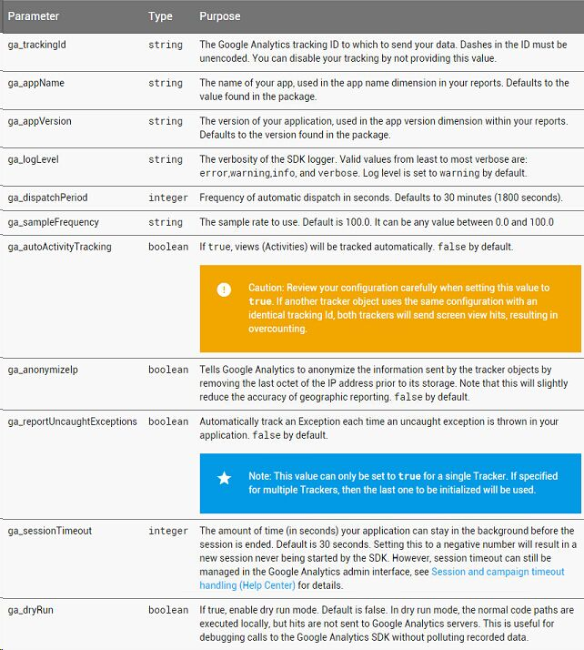

官方Guide文档中的xml配置项
官方Guide文档中Parameters这一节讲述了可以在xml中配置的选项，配置方法与范围稍微有些区别，坑爹的Guide文档中并没有描述它们的区别，具体的配置方法我们可以从API文档中获取。

全局配置项：GoogleAnalytics
- 配置res/xml/global_tracker.xml123456789<?xml version="1.0" encoding="utf-8" ?><resources><string name="ga_appName">My App</string><string name="ga_appVersion">1.0</string><!-- Default period is 1800 seconds or 30 minutes --><integer name="ga_dispatchPeriod">1800</integer><!-- Enable dry run mode. Default is false --><bool name="ga_dryRun">false</bool></resources>
在AndroidManifest.xml中加入
meta-data，并设置为上述xml1234567<application>...<meta-dataandroid:name="com.google.android.gms.analytics.globalConfigResource"android:resource="@xml/global_tracker" />...</application>当然我们也可以在编码中动态配置，如：
123GoogleAnalytics analytics = GoogleAnalytics.getInstance(this);analytics .setLocalDispatchPeriod(1800);analytics .setDryRun(false);注意官方文档中
ga_logLevel已经被标记为Deprecated ，使用以下adb指令可打开debug log输出1adb shell setprop log.tag.GAv4 DEBUG
跟踪器配置：Tracker
- 配置res/xml/ga_tracker.xml1234567891011<?xml version="1.0" encoding="utf-8" ?><resources><string name="ga_trackingId">UA-0000-1</string><string name="ga_sampleFrequency">100.0</string><integer name="ga_sessionTimeout">1800</integer><bool name="ga_autoActivityTracking">true</bool><bool name="ga_anonymizeIp">false</bool><bool name="ga_reportUncaughtExceptions">true</bool><screenName name="com.example.MainActivity">Home Screen</screenName><screenName name="com.example.SecondActivity">Second Screen</screenName></resources>
调用
GoogleAnalytics对象的newTracker方法并传入上述xml，即可完成对单独tracker的初始化12GoogleAnalytics analytics = GoogleAnalytics.getInstance(this);Tracker tracker = analytics.newTracker(R.xml.ga_tracker);注意：若
ga_autoActivityTracking开启，tracker将实现自动页面跟踪，此时我们可以指定页面与其对应的映射名字，可通过xml配置文件中的<screenName>元素来描述其映射关系。
参考
https://developers.google.com/android/reference/com/google/android/gms/analytics/GoogleAnalytics
https://developers.google.com/android/reference/com/google/android/gms/analytics/Tracker